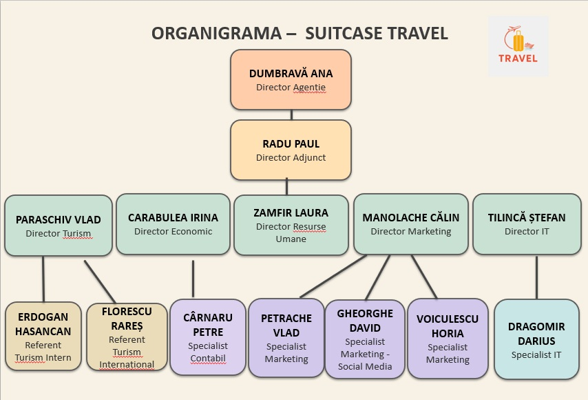

Cunoaște-ne mai bine
Suntem o agenție de turism fondată în anul 2025, dedicată creării unor experiențe de călătorie memorabile pentru clienții noștri. Oferim pachete turistice variate, adaptate diferitelor preferințe, de la city break-uri și vacanțe de relaxare până la aventuri culturale și excursii tematice. Ne dorim să inspirăm oamenii să descopere lumea și să se bucure de destinații autentice. Prin profesionalism, pasiune pentru călătorii și atenție la detalii, transformăm fiecare vacanță într-o experiență unică.
Viziunea și misiunea Suitcase Travel își propune să devină o agenție de turism modernă și accesibilă, care inspiră oamenii să descopere lumea într-un mod simplu, sigur și memorabil. Dorim să promovăm călătoriile ca experiențe care aduc oamenii mai aproape de culturi diferite, de natură și de noi perspective asupra lumii.
Misiunea agenției Suitcase Travel este de a oferi clienților informații, inspirație și propuneri de vacanțe atractive, adaptate diferitelor preferințe și bugete. Prin creativitatea și implicarea elevilor care au creat agenția, ne propunem să promovăm destinații turistice interesante și să demonstrăm că pasiunea pentru turism, organizarea și colaborarea pot transforma ideile în experiențe de călătorie de neuitat.
